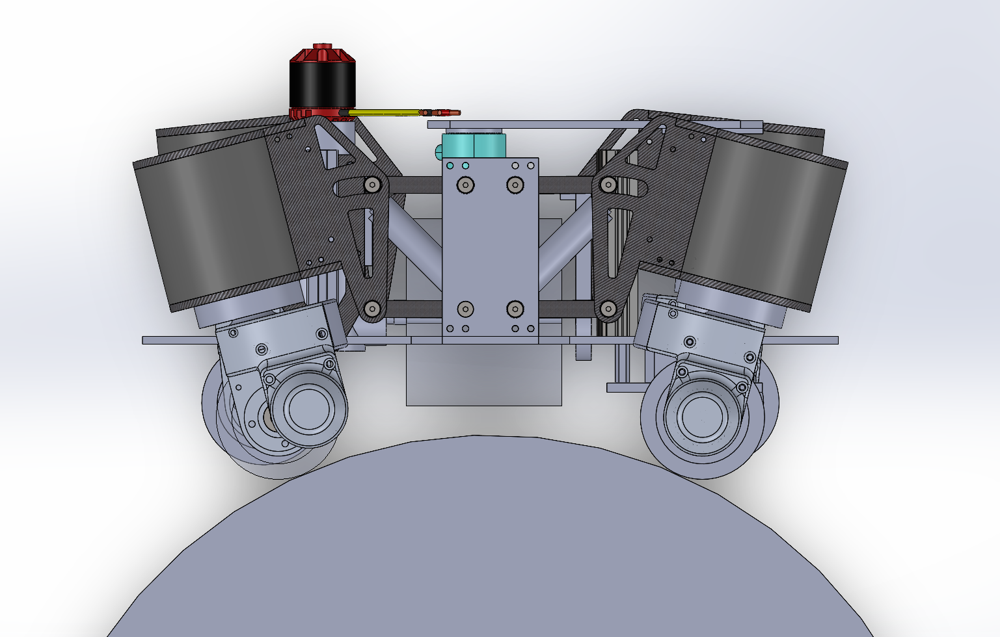
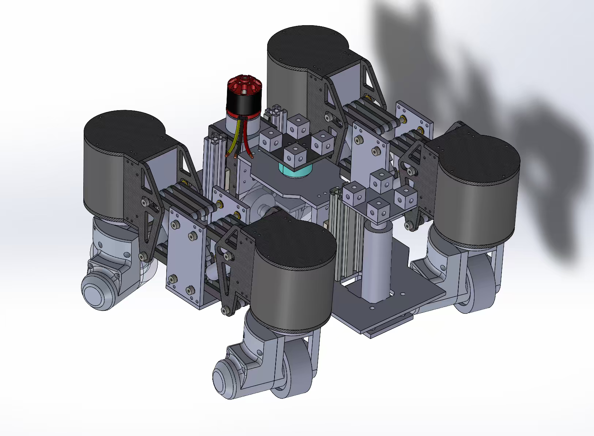
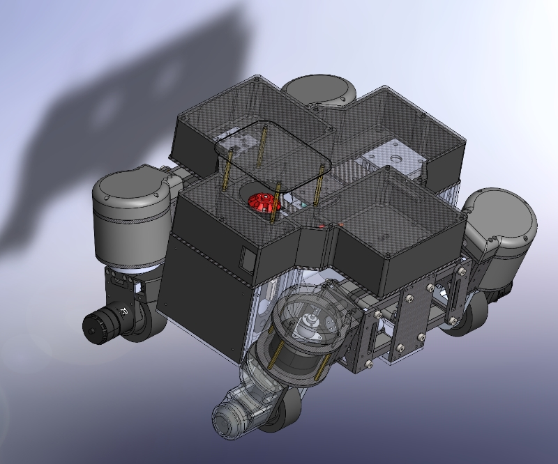
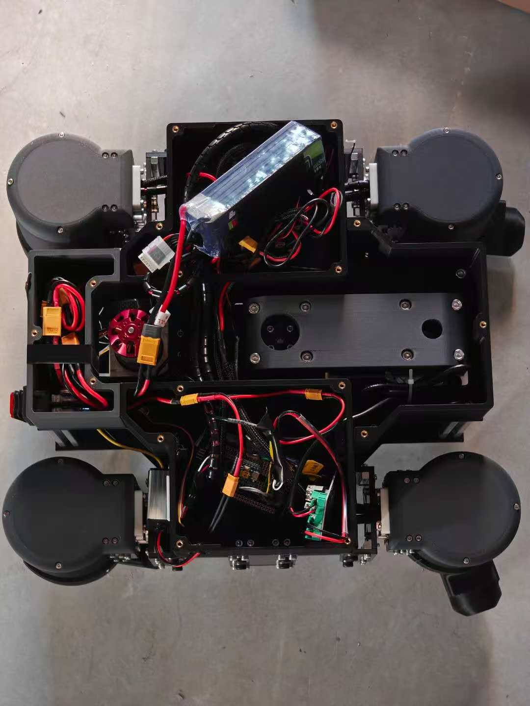
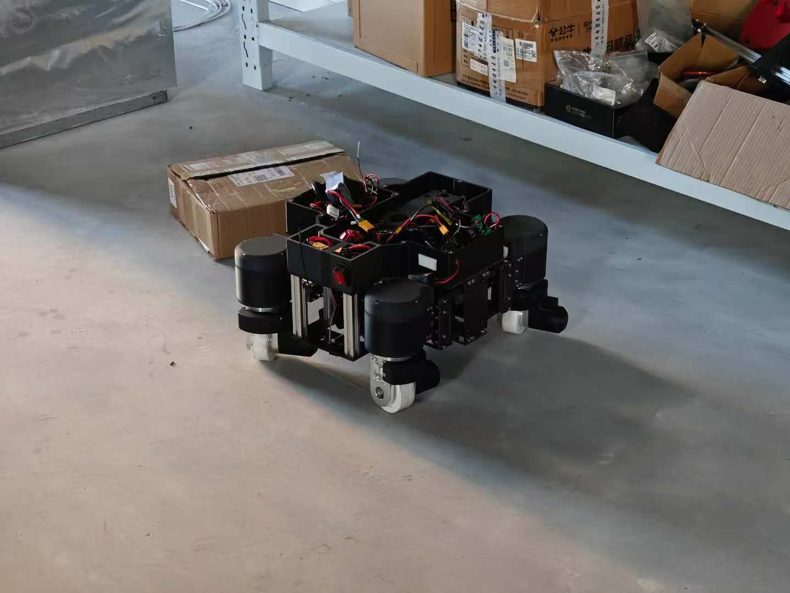
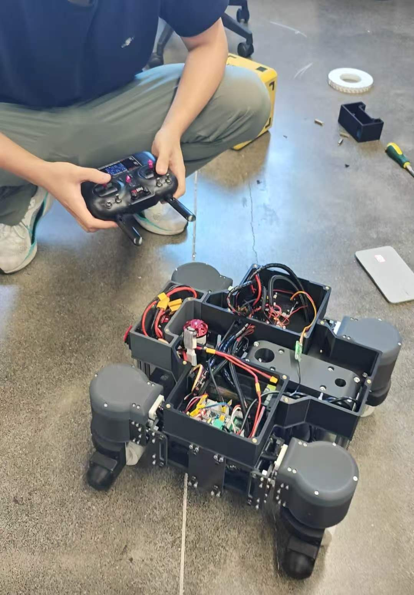
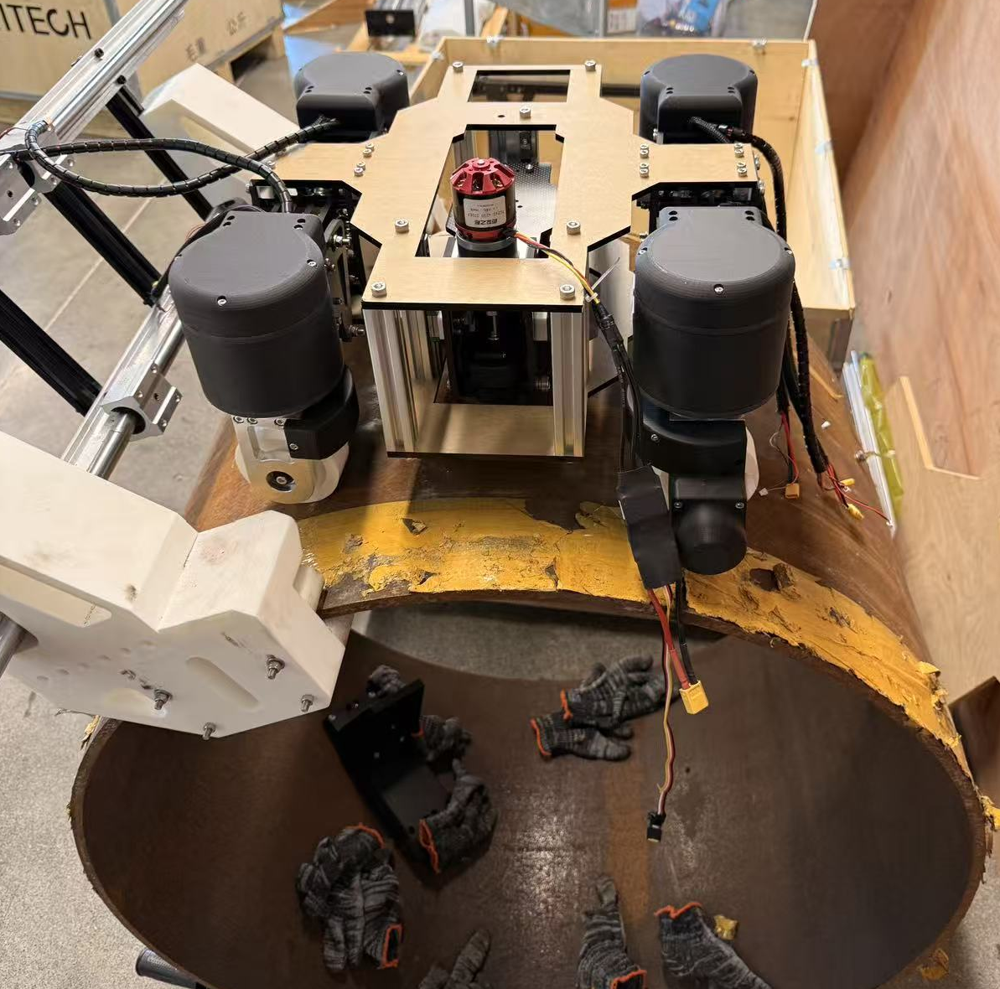
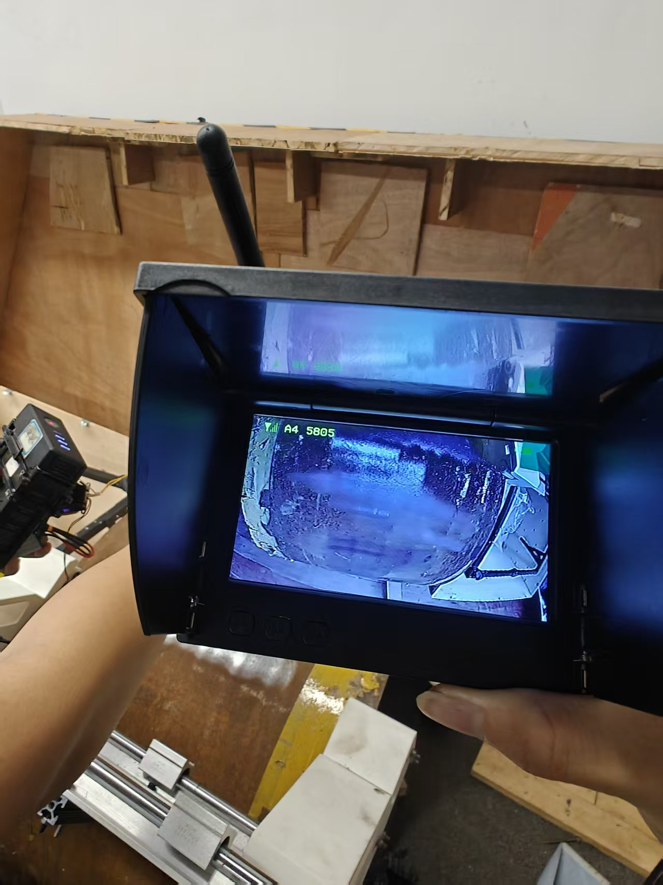

Project Overview
This project built on an earlier graduation-design prototype and substantially reworked the robot into two new iterations, 1.0 and 2.0. The goal was to create a platform that could adhere to the curved surface of a large steel pipeline, maneuver along the pipe, and remove corrosion with a controlled polishing mechanism.
The team developed the mechanical layout, steering modules, rust-removal mechanism, electronics integration, and prototype testing as a four-person group. The main change from 1.0 to 2.0 was a revision of the wheel / steering structure to improve motion on a curved pipe surface.
System Concept
The robot combines adhesion, mobility, surface treatment, and force regulation into one compact platform.
Magnetic adhesion
Custom high-force magnetic wheels were selected to keep the robot attached to ferromagnetic pipeline surfaces during operation.
Four steering modules
Four independently steerable wheel modules allow the chassis to change direction on a curved pipe rather than being constrained to a single travel direction.
Tangential rust removal
A modified electric polishing tool is oriented approximately tangential to the pipe surface so the abrasive wheel can remove corrosion while the vehicle travels.
Force regulation
A lead-screw lifting mechanism and force sensor are used to adjust contact between the polishing head and the pipe, providing a basis for controlling removal pressure.

Mechanical Iteration · 1.0 → 2.0
Both versions were developed during the summer project. The second iteration retained the overall system concept while revising the steering-wheel structure for better compatibility with motion on the pipe surface.


My Contribution
System development & integration
- Participated throughout mechanical and functional design discussions.
- Contributed to mechanical and hardware assembly for both prototypes.
- Participated in prototype debugging and motion / rust-removal testing.
Directly designed by me
- Upper electronics layout and packaging.
- Electronics compartments / enclosures and their assembly.
- Integration of the packaged electronics with the rest of the chassis.


Fabrication & Assembly
The prototypes combined 3D-printed parts, machined / purchased mechanical components, carbon-fiber plates, fasteners, wiring, and electronics. I participated throughout the mechanical and hardware build process.
Prototype Testing
Because the custom magnetic wheels had a long fabrication lead time, the summer prototype was not tested as a fully integrated magnetic climbing system. Instead, we separately tested chassis motion / steering and the rust-removal mechanism.



The prototype has not yet completed a realistic magnetic-adhesion test on a steel pipeline. The next iteration is intended to further refine the chassis structure, install the custom magnetic wheels, and validate integrated adhesion, steering, and rust removal on an actual pipe surface.